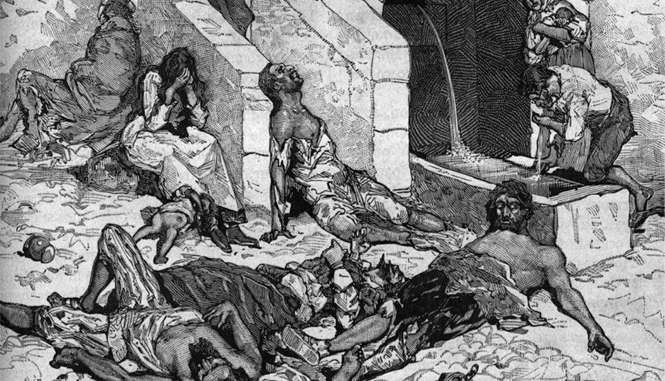
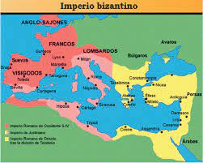

indice:v
Peste de Justiniano
De acuerdo con la Organización Mundial de la Salud (OMS), la Plaga de Justiniano (541-542) es la cuarta pandemia que más muertes ha causado (30-50 millones), después de la Peste Negra 1347-1351 (200 millones de muertos), la Viruela 1520 (56 millones de víctimas) y la Gripe Española 1918-1919 (40-50 millones de decesos) ...

tipo de virus
La Plaga de Justiniano, es una de las tres grandes pandemias causada por la bacteria gramnegativa Yersinia pestis.

video relacionado al tema